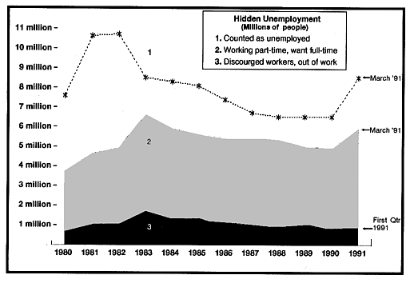

|
|
Search |
Published in:
When the federal government released the March unemployment figures, a lot of people were not counted. Some economists, those who paint the harshest portrait of the economy to justify government intervention, think they should be counted.
There are many millions of unemployed people with some very sad stories to tell about how they were forced out of their jobs by others' seniorities and by company cutbacks. 8.5 million individuals make up the 6.8% published unemployment rate in March, but there are about 7.1 million who are part-timers seeking full-time status and those who have given up looking. Lawrence Mishel, research director of the Economic Policy Institute in Washington says ``What you really have is a total unemployment and under-employment rate of 12.4%.

Technocracy has pointed out that, as technology is employed, people are disemployed. It is high time that people realize that politicians cannot supply solutions to this kind of problem no matter who is voted for. It is very unfortunate that conditions have to get to this stage before people begin to question what is going on in the country, and these conditions can only get worse.
The only solution to the problem is to change from the present system of political government to a system of functional government -- where everyone can benefit instead of only a few.